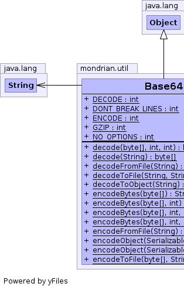
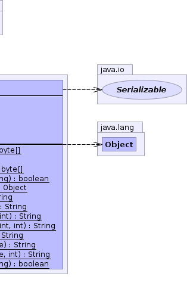

public class Base64 extends Object
Change Log:
I am placing this code in the Public Domain. Do with it as you will. This software comes with no guarantees or warranties but with plenty of well-wishing instead! Please visit http://iharder.net/base64 periodically to check for updates or to contribute improvements.
|  |  |
| Modifier and Type | Class and Description |
|---|---|
static class |
Base64.InputStream
A
Base64.InputStream will read data from another
java.io.InputStream, given in the constructor,
and encode/decode to/from Base64 notation on the fly. |
static class |
Base64.OutputStream
A
Base64.OutputStream will write data to another
java.io.OutputStream, given in the constructor,
and encode/decode to/from Base64 notation on the fly. |
| Modifier and Type | Field and Description |
|---|---|
static int |
DECODE
Specify decoding.
|
static int |
DONT_BREAK_LINES
Don't break lines when encoding (violates strict Base64 specification)
|
static int |
ENCODE
Specify encoding.
|
static int |
GZIP
Specify that data should be gzip-compressed.
|
static int |
NO_OPTIONS
No options specified.
|
| Modifier and Type | Method and Description |
|---|---|
static byte[] |
decode(byte[] source,
int off,
int len)
Very low-level access to decoding ASCII characters in
the form of a byte array.
|
static byte[] |
decode(String s)
Decodes data from Base64 notation, automatically
detecting gzip-compressed data and decompressing it.
|
static byte[] |
decodeFromFile(String filename)
Convenience method for reading a base64-encoded
file and decoding it.
|
static boolean |
decodeToFile(String dataToDecode,
String filename)
Convenience method for decoding data to a file.
|
static Object |
decodeToObject(String encodedObject)
Attempts to decode Base64 data and deserialize a Java
Object within.
|
static String |
encodeBytes(byte[] source)
Encodes a byte array into Base64 notation.
|
static String |
encodeBytes(byte[] source,
int options)
Encodes a byte array into Base64 notation.
|
static String |
encodeBytes(byte[] source,
int off,
int len)
Encodes a byte array into Base64 notation.
|
static String |
encodeBytes(byte[] source,
int off,
int len,
int options)
Encodes a byte array into Base64 notation.
|
static String |
encodeFromFile(String filename)
Convenience method for reading a binary file
and base64-encoding it.
|
static String |
encodeObject(Serializable serializableObject)
Serializes an object and returns the Base64-encoded
version of that serialized object.
|
static String |
encodeObject(Serializable serializableObject,
int options)
Serializes an object and returns the Base64-encoded
version of that serialized object.
|
static boolean |
encodeToFile(byte[] dataToEncode,
String filename)
Convenience method for encoding data to a file.
|
public static final int NO_OPTIONS
public static final int ENCODE
public static final int DECODE
public static final int GZIP
public static final int DONT_BREAK_LINES
public static String encodeObject(Serializable serializableObject)
serializableObject - The object to encodepublic static String encodeObject(Serializable serializableObject, int options)
Valid options:
GZIP: gzip-compresses object before encoding it.
DONT_BREAK_LINES: don't break lines at 76 characters
Note: Technically, this makes your encoding non-compliant.
Example: encodeObject( myObj, Base64.GZIP ) or
Example: encodeObject( myObj, Base64.GZIP | Base64.DONT_BREAK_LINES )
serializableObject - The object to encodeoptions - Specified optionsGZIP,
DONT_BREAK_LINESpublic static String encodeBytes(byte[] source)
source - The data to convertpublic static String encodeBytes(byte[] source, int options)
Valid options:
GZIP: gzip-compresses object before encoding it.
DONT_BREAK_LINES: don't break lines at 76 characters
Note: Technically, this makes your encoding non-compliant.
Example: encodeBytes( myData, Base64.GZIP ) or
Example: encodeBytes( myData, Base64.GZIP | Base64.DONT_BREAK_LINES )
source - The data to convertoptions - Specified optionsGZIP,
DONT_BREAK_LINESpublic static String encodeBytes(byte[] source, int off, int len)
source - The data to convertoff - Offset in array where conversion should beginlen - Length of data to convertpublic static String encodeBytes(byte[] source, int off, int len, int options)
Valid options:
GZIP: gzip-compresses object before encoding it.
DONT_BREAK_LINES: don't break lines at 76 characters
Note: Technically, this makes your encoding non-compliant.
Example: encodeBytes( myData, Base64.GZIP ) or
Example: encodeBytes( myData, Base64.GZIP | Base64.DONT_BREAK_LINES )
source - The data to convertoff - Offset in array where conversion should beginlen - Length of data to convertoptions - Specified optionsGZIP,
DONT_BREAK_LINESpublic static byte[] decode(byte[] source, int off, int len)
source - The Base64 encoded dataoff - The offset of where to begin decodinglen - The length of characters to decodepublic static byte[] decode(String s)
s - the string to decodepublic static Object decodeToObject(String encodedObject)
encodedObject - The Base64 data to decodepublic static boolean encodeToFile(byte[] dataToEncode, String filename)
dataToEncode - byte array of data to encode in base64 formfilename - Filename for saving encoded datapublic static boolean decodeToFile(String dataToDecode, String filename)
dataToDecode - Base64-encoded data as a stringfilename - Filename for saving decoded datapublic static byte[] decodeFromFile(String filename)
filename - Filename for reading encoded datapublic static String encodeFromFile(String filename)
filename - Filename for reading binary data